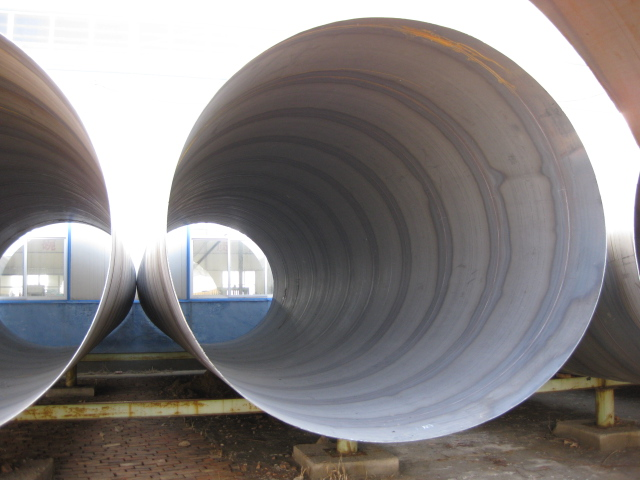

螺旋管厂家需矛盾缓解仍是一项艰巨的任务

针对国际外复杂严峻情势和经济下行压力，国度出台了一系列稳增长、热镀锌螺旋钢管促变革、调构造和惠民生的政策措施。从上半年运转状况看，包括推进棚户区改造、铁路根底设备等严重项目建立、扩展小微企业所得税优惠政策施行范围以及定向下调商业银行存款预备金率等微安慰政策效果正在显现。2季度GDP同比增长7.5%，增速比1季度进步了0.1个百分点，显示微观经济出现呈现企稳向好态势。下半年经济情势依然比拟复杂，既有推升上升的动力，也有制约经济疾速开展的压力。国度出台的政策措施还会进一步显现效果，将持续激起经济增长动力，热镀锌螺旋钢管需求会持续有所增长。而上半年微观调控出现出四大亮点：一是一以贯之地表现了让市场充沛起作用、放慢开展方式转变、打造中国经济晋级版的调控理念；二是在维持积极财政政策和稳健货币政策框架不变的同时，成功地贯彻微观调控的相机选择准绳，以微安慰无效推进了 稳增长，螺旋管厂家，并提振了市场决心；三是在微观调控中鲜明地运用供应管理方式和手腕，注重区别看待，突出重点，强调构造优化，统筹普通；四是把微观调控与深化变革无机结合，把短期与中临时目的无效衔接。下半年我国微观经济运转将重演前两年前低后高轨迹，使全年经济增速到达75%之上。在下半年的调控中，有关部门将把需求管理 与供应管理无效结合起来、更多注重在供应端发力的成功经历，进一步跟踪国民经济运转静态并前瞻性地思索政策储藏与项目储藏，在片面变革深化推进进程中，使我国微观调控更好地表现国度管理古代化的取向和促变革、螺旋管厂家稳增长、调构造、惠民生的功用与效应。再回来看下钢市自身。一方面，客观现实限制跌价，8月正是低温多雨的时节，处于需求旺季，钢企普遍反映成品销量不佳，热镀锌螺旋钢管为赢得销量和保证资金运转有些厂家甚至压价兜售，成品价低，废钢当然无法拉涨。另一方面，盼涨心态下或有拉涨能够，但全体看空心思难改。8月是旺季但也是过渡到金九银十的一个月，这时若厂商看好淡季行情，8月或能够呈现备货拉涨的状况，但就目前的状况来说，钢厂库存并没有增加多少，热镀锌螺旋钢管供需矛盾缓解仍是一项艰难的义务，所以想要呈现好的心态暂时是不大能够了。
天津市艺诺同心钢铁制造有限公司创办于2001年7月21日，专业生产各种螺旋钢管、螺旋管、直缝焊管等产品，多年来销往全国各地用于众多国家重点工程，并得到广大客户和各级领导的好评与信赖。联系电话：022-86878262
【螺旋管厂家】
地址：河北沧州螺旋钢管生产基地
手机：186-3170-5801 == QQ791117